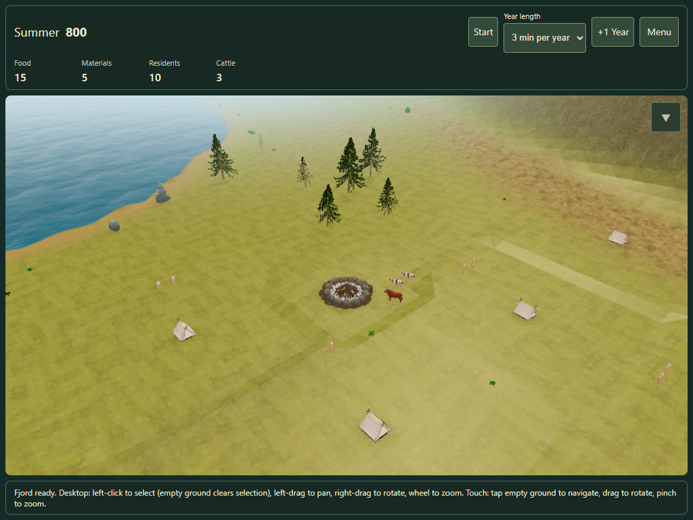
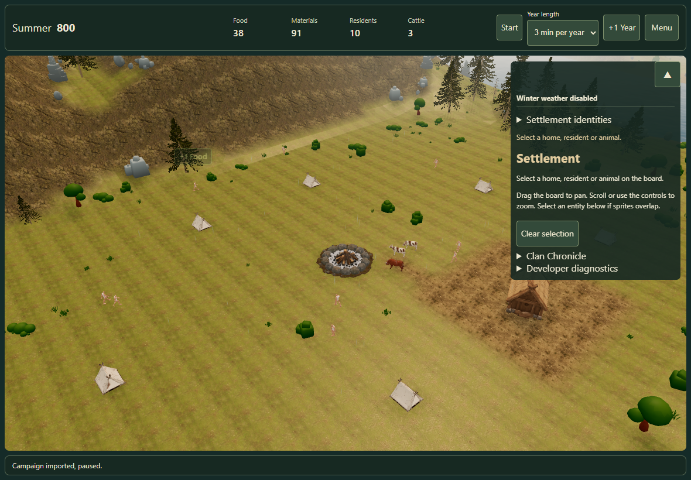
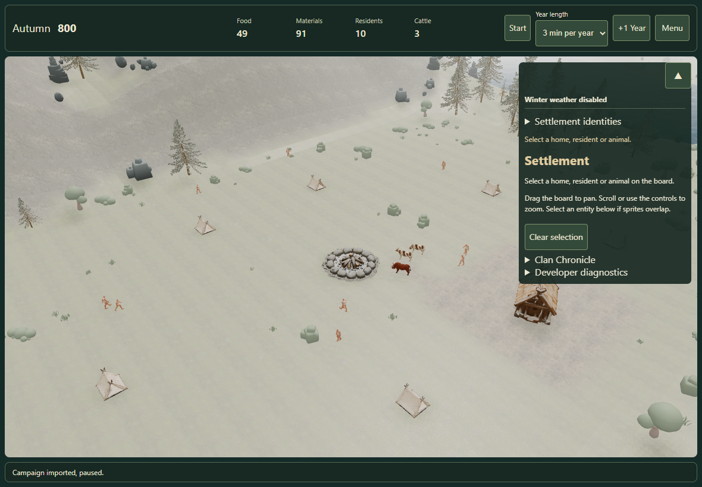
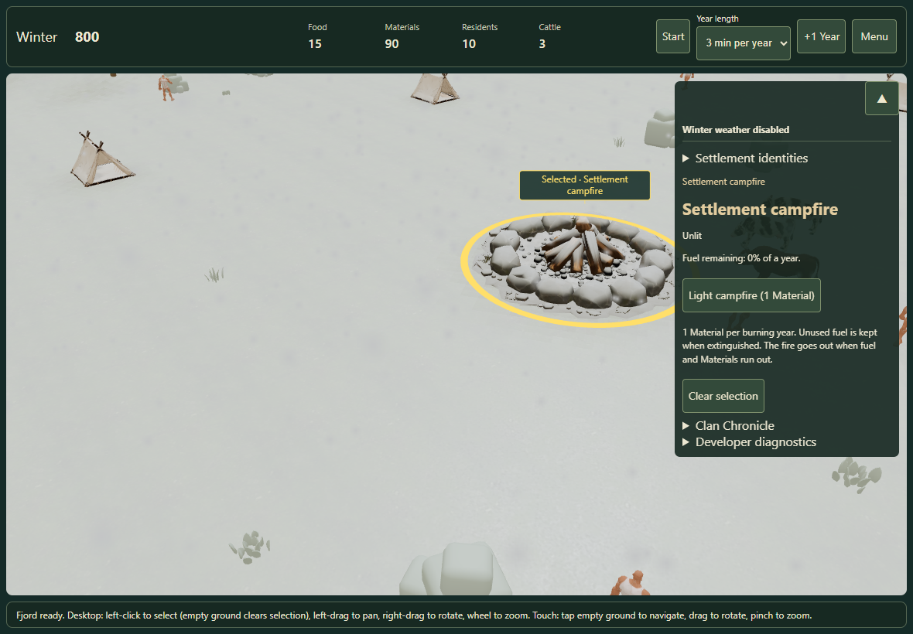

Fjord fixpass review
14 October 2026 · Loading shell, closer campfire arrival and recovered seasonal rain/snow.
Open a fresh campaign in a new tab · Validation report
The camera terrain-clearance work in #144 is still pending. This review does not claim that work is complete.
Arrival at the campfire
The camera now finishes about 53 m from the campfire, instead of 105 m in the previous seed-32 opening. The Summer founding remains dry and the chapter stays readable.

Seasonal precipitation recovered from PR #130



Automated Edge touch emulation; physical Safari verification is not claimed. Historical precipitation evidence is preserved.